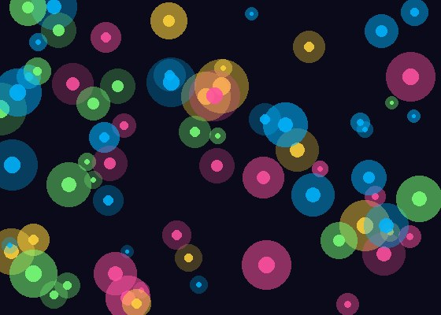

Hossein Zare Mehrjerdi
PhD candidate · Iowa State University
I build foundation models, LLM agents, and computer vision systems for scientific discovery — from molecular representation learning at the multi-billion scale, to autonomous experimental orchestration, to vision-language models in production.
research
- Multimodal foundation models — drug discovery & π-conjugated molecule generation at the 6B scale
- Agentic AI & LLMs — LangGraph, MCP, multi-agent orchestration, RAG
- Computer vision — VLMs, SAM, DINO, zero-shot phenotyping
- Domains — drug discovery, materials, biomedical imaging, agriculture
journey
-
2026
Iowa State University — PhD candidate
Graduate Research Assistant · AIIRA
-
2025

Bayer — Data Science & Visualization Intern
Foundation models for Cell Painting · Chesterfield, MO
-
2024
Corteva Agriscience — Data Scientist Intern
Production LLM systems to 1,000+ users · Des Moines, IA
-
2023
Iowa State University — M.S. + PhD start
Joined AIIRA
-
2020
Amirkabir University of Technology — B.S. Computer Engineering
Tehran, Iran · Thesis: CNN implementation with CUDA
projects
Multimodal Molecular Foundation Model
A multimodal foundation model fusing 1D SMILES, 2D molecular graphs, and 3D conformers, pretrained on ~6 billion molecules (scaling to 10B) for downstream property prediction. Includes an HPC pipeline for large-scale 3D geometry generation.
Bio-Shield — Agentic Biosecurity
Multi-agent LLM system for real-time identification and risk assessment of invasive insects. Built with LangGraph + LangChain, connecting specialized sub-agents via tool-calling and MCP servers.
AgReason — LLM Reasoning for Agriculture
First expert-curated benchmark (100 questions) and 44.6K-pair training dataset for large reasoning models in agriculture. LoRA fine-tuning of open-source LRMs.

Cell Painting Foundation Models @ Bayer
Foundation-model image pipelines for Cell Painting using DINO + OpenFold, accelerating pesticide discovery. Cut workflow time from one week to 30 minutes via automated AWS provisioning.
VLM Property Assessment — City of Des Moines
Vision-language model pipeline for municipal infrastructure evaluation. 93% accuracy via multi-model consensus, one-tenth the manual cost. Presented to City Manager.
publications
full list on google scholar
- Towards Large Reasoning Models for Agriculture. arXiv 2505.19259, 2025. [pdf]
- MaizeEar-SAM: Zero-Shot Maize Ear Phenotyping. arXiv 2502.13399, 2025. [pdf] [code]
- TerraIncognita: A Dynamic Benchmark for Species Discovery Using Frontier Models. arXiv 2506.03182, 2025. [pdf]
- Use of Artificial Intelligence in Soybean Breeding and Production. Advances in Agronomy, 2025.
- Recommendation System over Multi-layer Complex Networks. SAI Intelligent Systems Conf., Springer, 2023.